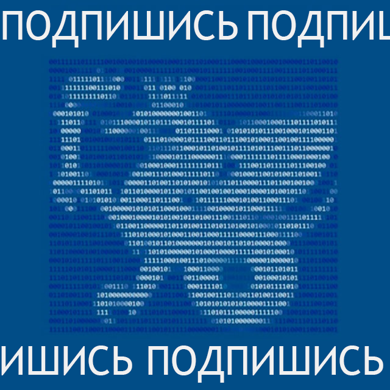

О программе
Эта программа объединяет две универсальные области — математику и английский язык. Они по-разному объясняют мир, но оба учат ясно мыслить, точно выражать мысли и понимать логику других. Наши студенты становятся педагогами, которые владеют языком чисел и языком общения, способны объяснять сложное просто — на любом языке и в любой аудитории.
Программа формирует педагогов нового поколения для школ с полилингвальной и билингвальной средой. Выпускники работают на стыке образования, технологий и коммуникации, создают авторские методики, разрабатывают цифровые ресурсы для обучения и участвуют в международных проектах. Это возможность стать специалистом, востребованным в России и за рубежом.
Учебный план включает глубокие математические дисциплины — алгебру, анализ, геометрию, теорию вероятностей — и современную лингвистическую подготовку: академический английский, методика преподавания иностранного языка, перевод и школьная математика на английском языке. Также часть программы посвящена изучению современной методики обучения предметам естественно-научного направления на английском языке. Если ты слышал про такую крутую вещь как CLIL, знай — её популяризировали в Республике Татарстан именно мы.
Математика и английский: больше общего, чем кажется
Математика и английский — два языка, которые учат нас мыслить точно и выражать мысли ясно. Переверни карточку — и прочитай ту же идею на английском.
Математика — это тоже язык
У неё есть грамматика, словарь и своя поэтика. В выражении 8 + 2 = 10 цифры — существительные, знаки — глаголы, а всё вместе — предложение.
Mathematics is a language too
It has its own grammar, vocabulary and poetics. In the expression 8 + 2 = 10, numbers are nouns, signs are verbs, and together they form a sentence.
Общий код для мира
И английский, и математика понимаются повсюду. Это универсальные языки, на которых можно строить диалог — от школьного урока до международной конференции.
A universal code for the world
Both English and mathematics are understood everywhere. They are universal languages of dialogue — from a school lesson to an international conference.
Формулы и исключения
В обоих языках есть строгие правила и свои исключения. Именно они делают обучение не механическим, а живым и творческим.
Formulas and exceptions
Both languages have strict rules and curious exceptions. That’s what makes learning them alive, human and creative.
«Математика учит думать точно. Английский — выражать точно. Вместе они создают мышление, понятное миру.»
Команда кафедры билингвального и цифрового образования
и их любимые цитаты на английском
Луиза Плотникова
Заведующий кафедрой
Доцент, кандидат наук
“Pure mathematics is, in its way, the poetry of logical ideas.”
Ляйля Салехова
Научный руководитель программы
Профессор, доктор наук
“The essence of mathematics is not to make simple things complicated, but to make complicated things simple.”
Андрей Данилов
Доцент, кандидат наук
“Without mathematics, there’s nothing you can do. Everything around you is mathematics.”
Рината Зарипова
Доцент, кандидат наук
“Do not worry about your difficulties in Mathematics. I can assure you mine are still greater.”
Тимур Фазлиахметов
Старший преподаватель
“Mathematics is the music of reason.”
Булат Хакимов
Доцент, кандидат наук
“Mathematics is the language in which God has written the universe.”
Марина Лукоянова
Доцент, кандидат наук
“In mathematics, the art of proposing a question must be held of higher value than solving it.”
Наиля Батрова
Доцент, кандидат наук
“Go down deep enough into anything and you will find mathematics.”
Наши моменты и вайбы
POV: учёба глазами наших студентов
короткие истории о жизни в программе — без фильтров, просто как есть
Factoring a Quadratic Trinomial — Algebra
Combinations and the Number of Combinations — Probability and Statistics
The Multiplication Rule of Counting — Probability and Statistics
Партнёры
Школы "Адымнар"
Министерство образования и науки РТ
Академия наук РТ
Центр современных смарт-технологий EduTech
Почему именно эта программа
Два языка мышления
Математика и английский формируют точность, логику и гибкость выражения. Мы учим говорить языком чисел и идей — понятно для любой аудитории.
Полилингвальная среда
Учёба проходит в многоязычном пространстве, где английский — не просто предмет, а средство коммуникации, преподавания и научного поиска.
Современные технологии и CLIL
Мы интегрируем цифровые ресурсы и применяем CLIL-подход — обучение предмету через иностранный язык. Это методика будущего, доступная уже сегодня.
Карьерная гибкость
Выпускники преподают в школах, лицеях и колледжах, участвуют в международных проектах, переводят и создают цифровой контент. Две компетенции — множество путей.
Структура обучения (5 лет)
1 курс — Основы и адаптация
Введение в профессию педагога, базовые курсы по алгебре, аналитической геометрии, академический английский, фонетика и грамматика. Первые шаги в билингвальной среде и участие в адаптационных проектах.
2 курс — Системное мышление
Теория вероятностей, линейная алгебра, синтаксис и лексикология английского языка. Первые CLIL-занятия и мини-проекты, где математика преподаётся через английский.
3 курс — Методика и практика
Методика преподавания математики и иностранного языка, педагогическая психология, цифровые инструменты обучения. Первая педагогическая практика в билингвальных школах.
4 курс — Исследование и проектирование
Научно-исследовательская работа, углублённые математические и лингвистические курсы, разработка собственных учебных материалов и участие в конференциях.
5 курс — Профессионализация
Преддипломная практика, международные проекты, участие в образовательных форумах и конференциях. Защита выпускной квалификационной работы и получение степени бакалавра по двум профилям — Математика и Английский язык.
Перспективы выпускников
Учитель математики и английского языка
Преподавайте в школах, лицеях и гимназиях, включая полилингвальные и международные классы. Ведите уроки по математике на всех трёх языках обучения: русском, татарском и английском языках, применяя технологию CLIL и современные цифровые ресурсы.
Участник международных образовательных проектов
Работайте в программах академического обмена, конференциях и грантовых инициативах. Знание английского языка и педагогических технологий открывает путь к международной карьере.
Разработчик образовательного контента
Создавайте цифровые курсы, интерактивные тренажёры и мультиязычные образовательные ресурсы. Внедряйте инновации в EdTech и развивайте современные методики обучения.
Join us!
Стань частью сообщества, где математика и английский язык встречаются, чтобы расширять границы мышления и общения.
Хочу в командуА также у нас есть телеграм-канал
